Tutorial. Instalación Python y Visual Studio Code
#
En este tutorial aprenderemos cómo descargar e instalar Python y Visual Studio Code (VSC). Python es el lenguaje de programación que utilizaremos durante el semestre, mientras que Visual Studio Code es un entorno de desarrollo integrado (IDE) que facilitará el proceso de programación.
1. Descargar Python
Abra su navegador y acceda a la página oficial de Python: https://www.python.org.
En la página principal, verá un botón llamado Downloads
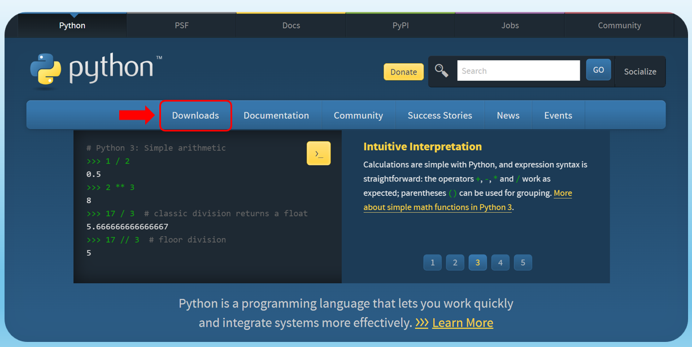
Al seleccionarlo, encontrará la versión más reciente recomendada para el sistema operativo Windows. Haga clic en ese botón para iniciar la descarga. Si está utilizando macOS o Linux/UNIX, deberá hacer clic en los enlaces correspondientes, los cuales están marcados con un recuadro rojo que se muestra a continuación.
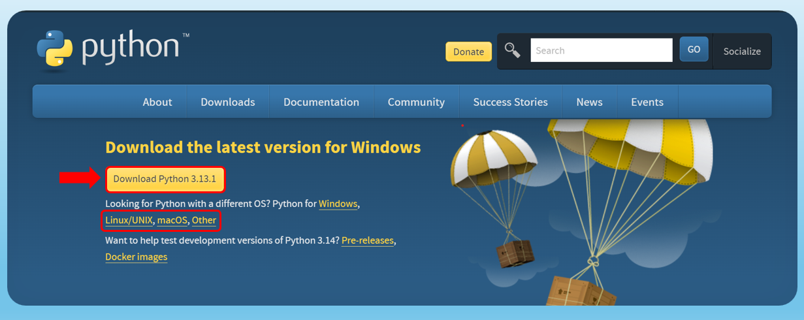
Una vez que se haya completado la descarga, haga doble clic en el archivo descargado para ejecutar el instalador.
Asegúrese de marcar la casilla “Add Python to PATH” antes de hacer clic en “Install Now”. Esto hará que Python sea accesible desde la línea de comandos (terminal). Luego, haga clic en “Install Now” y espere a que se complete la instalación.
Una vez instalado Python, podrá verificar la versión instalada. Para ello, abra Command Prompt (en Windows) y escriba el siguiente comando:
python --version
Si todo está bien, debería ver la versión de Python instalada, como por ejemplo:
Python 3.13.1
2.1. Descargar Visual Studio Code (VSC)
Visual Studio Code (VS Code) es un editor de código fuente ligero, potente y extensible, ideal para programadores. Este tutorial es una guía paso a paso para instalarlo en su computadora.
Abra su navegador preferido.
Vaya a la página oficial de descarga de VS Code:
https://code.visualstudio.com/Haga clic en el botón Download for your OS. VS Code detectará automáticamente su sistema operativo y le ofrecerá la versión adecuada.
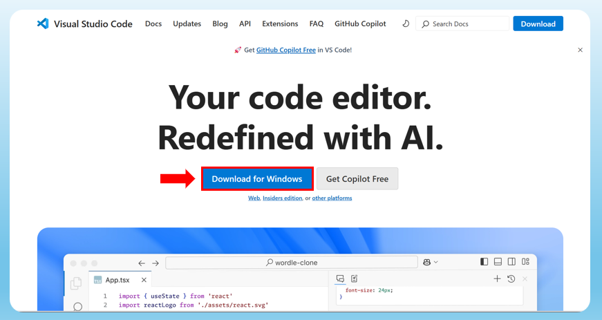
2.2. Instalar Visual Studio Code (VSC)
En Windows#
Abra el archivo descargado (
VSCodeSetup.exe).Acepte los términos de la licencia y haga clic en Next.
Seleccione una carpeta de instalación (o deje la predeterminada) y haga clic en Next.
Marque las opciones que prefiera, como:
“Agregar a PATH (recomendado)”.
“Registrar el editor como predeterminado para archivos soportados”.
Haga clic en Install y espere a que se complete la instalación.
Una vez instalada, haga clic en Finish para abrir VS Code.
En macOS#
Abra el archivo
.dmgdescargado.Arrastre el ícono de Visual Studio Code a la carpeta Applications.
Abra la carpeta Applications y ejecute VS Code.
3. Comenzando con Visual Studio Code (VSC)
En esta parte aprenderemos los aspectos mas importantes que Visual Studio Code puede ofrecer, aprenderemos sobre los diferentes componentes sobre la interfaz de usuario y como personalizarlos a su gusto. Al momento de abrir la aplicación observará esto:
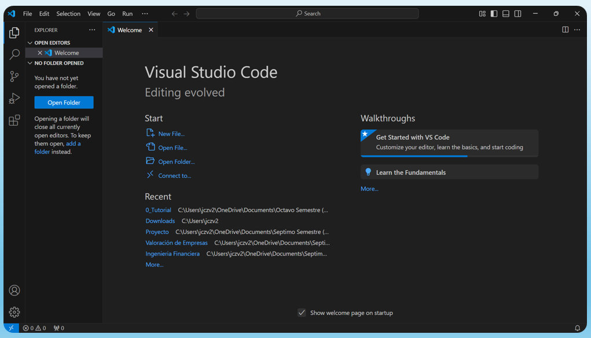
Abrir una carpeta en VS Code#
Puede usar VS Code para trabajar en archivos individuales y realizar ediciones sencillas, o puede abrir una carpeta, también conocida como un workspace.
Comencemos creando una carpeta llamada vscode1000 y abriéndola en VS Code.
Al abrir VS Code por primera vez, debería ver la página de bienvenida con diferentes acciones para comenzar.
Seleccione File > Open Folder… desde el menú para abrir una carpeta.
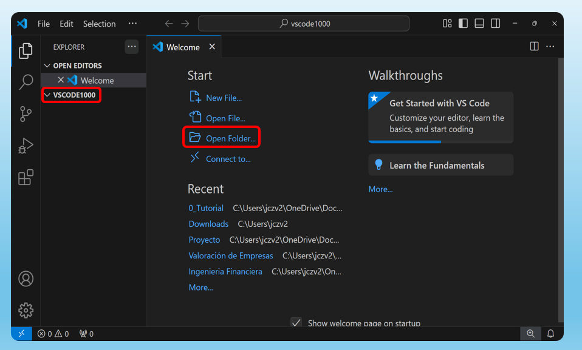
Explorando la interfaz de usuario#
Ahora que tenemos un espacio de trabajo abierto in VS Code, podemos echar un vistazo rápido a la interfaz de usuario.
Use la barra de actividades para cambiar entre diferentes vistas
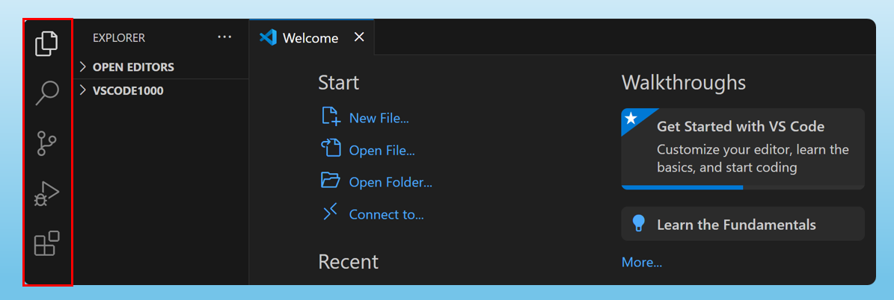
💡 Tip: Pase el cursor sobre la barra de actividades para ver el nombre de cada vista y el atajo de teclado correspondiente. Puede abrir y cerrar una vista seleccionando la vista nuevamente o presionando el atajo de teclado.
Ver y editar archivos con el editor#
Seleccione la vista Explorer en la Barra de actividades y seleccione el botón New File… para crear un nuevo archivo en su espacio de trabajo.
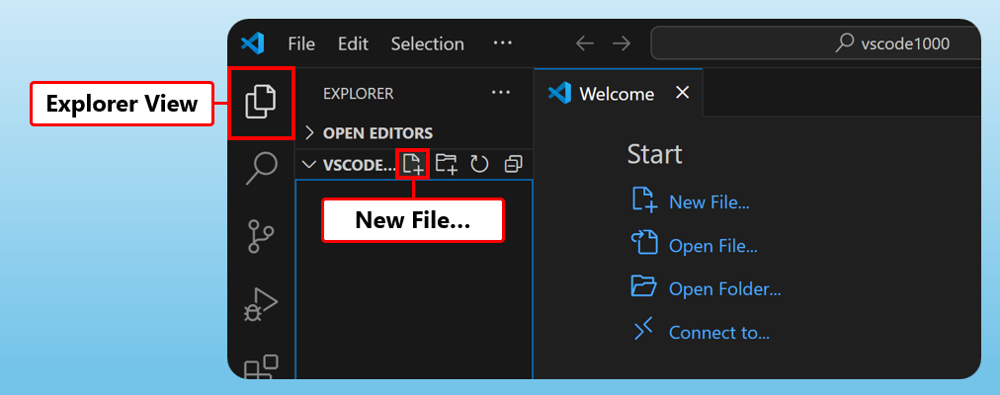
Introduzca el nombre
prueba.pyy presioneEnter. Vera que se agrega un archivo a su espacio de trabajo y se abre un Editor en el área principal de la ventana.
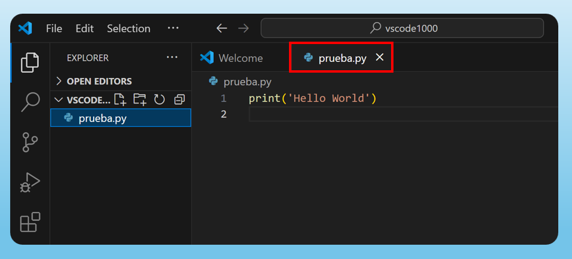
Ahora puede escribir codigo en Python en su archivo prueba.py. Sin embargo, notará que a medida que escribe no aparecen sugerencias que le ayudan a completar el código, o incluso si intenta ejecutar el codigo con la tecla F5 notara que aparece este aviso:
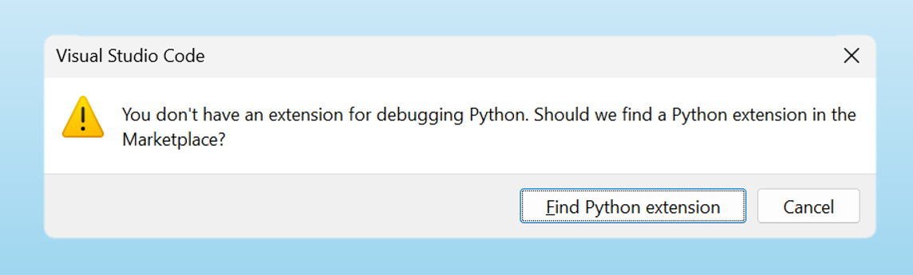
Es necesario instalar una extensión de Python en Visual Studio Code (VS Code) para ejecutar Python porque VS Code, por defecto, no incluye soporte completo para lenguajes de programación como Python. VS Code cuenta con un gran ecosistema de extensiones que le permiten agregar lenguajes, depuradores y herramientas a su instalación para respaldar su flujo de trabajo. Hay miles de extensiones disponibles en Visual Studio Marketplace.
Instalemos una extensión de lenguaje para agregar compatibilidad con Python.
Seleccione la vista Extensiones en la barra de actividades.
La vista Extensiones le permite buscar e instalar extensiones desde VS Code.
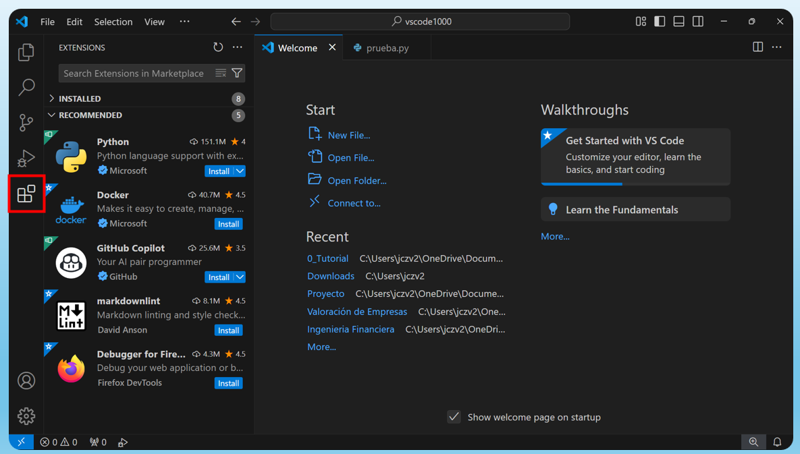
Escriba Python en el cuadro de búsqueda de la vista de extensiones para buscar extensiones relacionadas con Python. Seleccione la extensión de Python publicada por Microsoft y, a continuación, seleccione el botón Install.
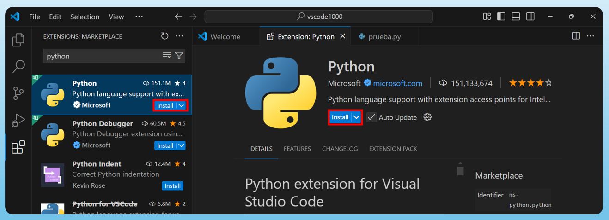
Ahora, vuelva al archivo
prueba.pyen su espacio de trabajo, y puede volver a escribir la famosa linea de codigoprint('Hello World'). Note que ahora también recibe sugerencias e IntelliSense para el código Python.
Finalmente, para ejecutar el código, puede hacer clic en la flecha ubicada en la esquina superior derecha de la ventana o presionar la tecla F5. Al hacerlo, el archivo de Python se ejecutará y verá cómo se despliega la terminal, mostrando el mensaje Hello World.
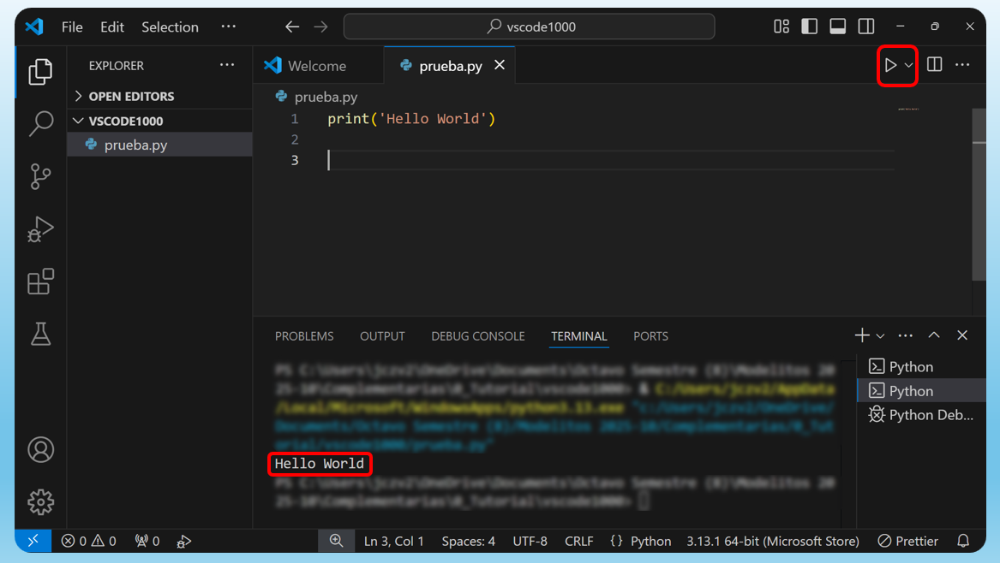
💡 Con esto, ya estamos listos para comenzar a trabajar. ¡Esperamos que disfrute del curso de Modelos Probabilisticos!
Universidad de los Andes | Vigilada Mineducación. Reconocimiento como Universidad: Decreto 1297 del 30 de mayo de 1964. Reconocimiento personería jurídica: Resolución 28 del 23 de febrero de 1949 Minjusticia. Departamento de Ingeniería Industrial Carrera 1 Este No. 19 A 40 Bogotá, Colombia Tel. (57.1) 3324320 | (57.1) 3394949 Ext. 2880 /2881 http://industrial.uniandes.edu.co